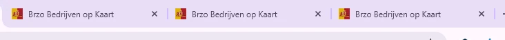
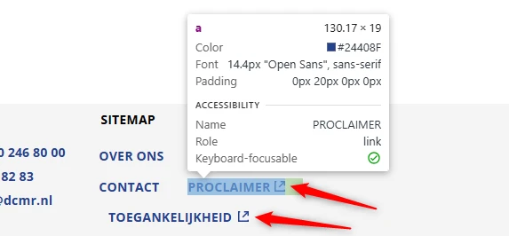
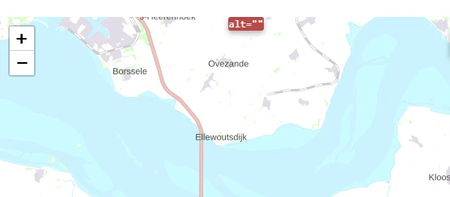
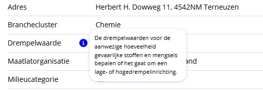

Audit digitale toegankelijkheid van website brzoviewer.pzh.nl
Samenvatting
Wij hebben de website brzoviewer.pzh.nl onderzocht tussen 28 april en 12 mei 2026. Op dit moment is een deel van de succescriteria als voldoende beoordeeld. In dit rapport lees je welke punten nog verbetering behoeven en hoe deze kunnen worden aangepakt.
Op alle pagina's van de website ontbreekt een manier om herhalende content over te slaan. Er is geen skiplink, geen semantische landmarks en geen koppenstructuur die als alternatief kan dienen.
Daardoor moeten bezoekers die met het toetsenbord of een schermlezer navigeren bij elke pagina dezelfde menu-onderdelen doorlopen voordat zij bij de hoofdinhoud komen.
User story
Als bezoeker die navigeert met het toetsenbord, een schermlezer, spraakbesturing of een switch, heb ik op elke pagina een manier nodig om de herhalende navigatie over te slaan, bijvoorbeeld een werkende skiplink. Nu moet ik op elke pagina door dezelfde menu-items tabben voordat ik bij de inhoud kom.
Oplossing
Zorg ervoor dat bezoekers vaste onderdelen van de pagina kunnen overslaan en direct naar de hoofdinhoud kunnen gaan. Dit kan bijvoorbeeld door:
een skiplink die bij gebruik de toetsenbordfocus naar de hoofdinhoud verplaatst;
het duidelijk afbakenen van paginadelen, zoals navigatie en hoofdinhoud, met landmarks;
een consistente en correcte koppenstructuur die op elke pagina wordt toegepast.
Een skiplink moet de eerste link op de pagina zijn. Deze mag standaard verborgen zijn, maar moet zichtbaar worden zodra hij toetsenbordfocus krijgt.
Op alle pagina's van de website ontbreekt het lang-attribuut op het html-element. Daardoor kan hulpsoftware de juiste taal van de pagina niet vaststellen en de inhoud niet correct voorlezen.
User story
Als bezoeker die de pagina laat voorlezen door een schermlezer, heb ik nodig dat elke pagina de taal aangeeft via een lang-attribuut op het html-element. Zonder dat moet mijn schermlezer gokken, valt vaak terug op de verkeerde standaardstem en worden woorden met de verkeerde uitspraakregels voorgelezen — waardoor de inhoud onbegrijpelijk wordt.
Oplossing
Zorg ervoor dat de taal van de pagina is ingesteld op Nederlands (lang="nl"), zodat hulpsoftware de inhoud op de juiste manier kan voorlezen.
#3 - Pagina's hebben dezelfde paginatitel
Impact: MediumType: ContentWCAG: 2.4.2EN: 9.2.4.2

Alle pagina's van de website hebben dezelfde tekst in het title-element: "Brzo Bedrijven op Kaart". Elke pagina hoort een unieke, beschrijvende titel te hebben.
Wanneer meerdere pagina's dezelfde titel hebben, raken bezoekers in de war en wordt navigeren tussen pagina's lastiger. Dit geldt vooral voor bezoekers die afhankelijk zijn van de titelbalk of browsertabs om pagina's van elkaar te onderscheiden.
User story
Als bezoeker die met een schermlezer navigeert, meerdere browsertabs openhoudt, mijn geschiedenis doorzoekt of bladwijzers gebruikt, heb ik per pagina een unieke titel nodig die de inhoud van die pagina beschrijft. Nu krijgen verschillende pagina's dezelfde titel: mijn schermlezer leest steeds dezelfde woorden voor, mijn browsertabs zijn niet van elkaar te onderscheiden, en mijn geschiedenis en bladwijzers wijzen naar verschillende pagina's met hetzelfde label.
Oplossing
Zorg ervoor dat het title-element van elke pagina uniek is en de inhoud van de betreffende pagina nauwkeurig beschrijft, bij voorkeur aangevuld met de naam van de organisatie.
Het logo bovenaan de website heeft geen tekstalternatief. Het alt-attribuut is leeg.
Informatieve afbeeldingen, zoals een logo, moeten altijd een alt-tekst hebben waarin de volledige tekst van het logo is opgenomen. Zonder dit alternatief is de informatie in het logo niet beschikbaar voor bezoekers die de afbeelding niet kunnen zien. Omdat het logo ook als link naar de homepage fungeert, mist deze link bovendien een toegankelijke naam.
Hetzelfde probleem speelt bij het logo in de footer.
User story
Als bezoeker die de pagina via een schermlezer hoor, met afbeeldingen uit leest, of op het logo vertrouw om te bevestigen dat ik op de juiste site ben, heb ik een alt-tekst bij het logo nodig met de volledige zichtbare tekst van het logo. Zonder die tekst zegt mijn schermlezer niets of alleen "afbeelding", kan ik niet zien van welke organisatie deze pagina is, en raak ik het belangrijkste navigatiepunt op de site kwijt — want het logo is meestal ook een link naar home.
Oplossing
Zorg ervoor dat het logo is voorzien van een tekstalternatief (alt-tekst) waarin de volledige tekst van het logo is opgenomen.
#5 - Icoon "opent in nieuw browsertab" heeft geen tekstalternatief
Impact: MediumType: ContentWCAG: 1.1.1EN: 9.1.1.1

In de footer staan bij de links "DCMR", "Proclaimer" en "Toegankelijkheid" iconen die aangeven dat de link in een nieuwe browsertab opent. Deze iconen hebben geen tekstalternatief, waardoor schermlezergebruikers niet weten dat de link een nieuwe tab opent.
Hetzelfde probleem speelt bij de link "DCMR" in de header en bij links in de tabel naast de kaart wanneer een bedrijf is geselecteerd.
User story
Als bezoeker die links volg met een schermlezer en wil weten waar elke link mij naartoe brengt, heb ik bij elk "opent in een nieuwe tab"-icoon nodig dat die informatie als tekst beschikbaar is, bijvoorbeeld via een alt-attribuut op het img-element of via visueel verborgen tekst. Zonder die informatie kan ik niet zien dat de link mij uit de huidige tab haalt, raak ik de context kwijt als een nieuwe tab plotseling focus krijgt, en kan ik me niet voorbereiden op de wisseling.
Oplossing
Voeg de informatie dat de link een nieuwe browsertab opent toe als visueel verborgen tekst die wel toegankelijk is voor schermlezers, of als alt-tekst bij het icoon (bijvoorbeeld "Opent in een nieuw tabblad").
In de footer staan socialemedialinks die bestaan uit een afbeelding met een leeg alt-attribuut. De afbeeldingen zijn daardoor verborgen voor schermlezers, de links hebben geen toegankelijke naam en de bestemming is niet duidelijk.
User story
Als bezoeker die links volg met een schermlezer, met spraakbesturing, of met afbeeldingen uitgeschakeld, heb ik bij elke afbeelding die ook een link is een toegankelijke naam nodig die beschrijft waar de link naartoe gaat — via alt op de afbeelding of aria-label op het a-element. Nu heeft de afbeelding geen tekstalternatief, kondigt mijn schermlezer alleen "link" aan en kan ik niet zien waar de link mij naartoe brengt.
Oplossing
Voorzie de link van toegankelijke, tekstuele inhoud. Dit kan bijvoorbeeld door:
een beschrijvende tekst toe te voegen binnen het a-element en deze visueel te verbergen met CSS;
een aria-label met een korte beschrijving van de bestemming van de link te gebruiken.
#7 - Kop niet gemarkeerd als kop
Impact: MediumType: ContentWCAG: 1.3.1EN: 9.1.3.1
In de footer fungeren de teksten "Contact" en "Sitemap" als kop, maar ze zijn niet als kop gemarkeerd in de code.
Voor bezoekers die hulpsoftware gebruiken, is tekst die visueel als kop is vormgegeven maar niet als kop is gemarkeerd in de code niet bruikbaar. Deze bezoekers navigeren via koppen om de inhoud te scannen of snel naar een specifieke sectie te gaan. Dit is alleen mogelijk wanneer koppen ook in de code als kop zijn vastgelegd.
User story
Als schermlezergebruiker heb ik nodig dat sectietitels zoals "Contact" en "Sitemap" als kop zijn gemarkeerd, zodat ik snel tussen secties van de pagina kan navigeren.
Oplossing
Markeer deze teksten met het juiste HTML-element en gebruik daarbij het correcte kopniveau (h1 tot en met h6), zodat de structuur van de pagina ook in de code zichtbaar is.
#8 - Horizontale scrollbalk op footerlinks bij 400% zoom
Bij 400% zoom passen verschillende footerlinks niet binnen de viewport. Onder de links "Contact", "Proclaimer" en "Toegankelijk" verschijnt een horizontale scrollbalk. Bij de laatste twee links wordt de tekst daardoor lastig te lezen en te bedienen voor bezoekers die inzoomen of een smalle viewport gebruiken.
User story
Als bezoeker met een visuele beperking die inzoomt tot 400% (of de pagina op 320 CSS-pixels breed bekijkt), heb ik nodig dat footerlinks zonder horizontale scroll mee verschuiven, zodat ik ze kan lezen en gebruiken zonder de pagina zijwaarts te bewegen.
Oplossing
Zorg ervoor dat de footer zich aanpast aan hoge zoomniveaus en smalle viewports. Links moeten kunnen wrappen of onder elkaar staan binnen de beschikbare ruimte, zonder dat horizontaal scrollen nodig is.
In de alinea onder de kop "Brzo-bedrijven op kaart" staan twee links in de lopende tekst. Het enige verschil tussen de links en de omringende tekst is de kleur. Voor bezoekers met een visuele beperking of kleurenblindheid is dat onvoldoende om de links te herkennen.
Hetzelfde probleem speelt in de footer bij de link "proclaimer van de provincie Zuid-Holland".
User story
Als bezoeker die kleurenblind is, slecht zie, op een monochroom scherm lees of de pagina snel scan, heb ik nodig dat elke link in lopende tekst zich ook op een andere manier dan kleur onderscheidt van de omringende tekst — bijvoorbeeld door een onderstreping, een vet lettertype of een icoon. Nu is alleen de kleur anders en kunnen mijn ogen dat verschil niet oppakken, waardoor de links onzichtbaar opgaan in de alinea.
Oplossing
Kleur mag worden gebruikt om links te onderscheiden van statische tekst, mits aan deze twee voorwaarden wordt voldaan:
het contrast tussen de linktekst en de omringende tekst is minimaal 3:1;
er is een extra visuele indicator aanwezig, zoals een onderstreping of een wijziging in achtergrondkleur bij hover of focus.
De placeholdertekst in het invoerveld "Zoek bedrijf" voldoet niet aan het minimumcontrast van 4,5:1 met de achtergrond. De tekst is grijs (#BABABA) op wit, wat een contrast van 1,9:1 geeft. Omdat het zoekicoon op enige afstand van het zoekveld staat, moet de placeholdertekst zichtbaar zijn. Voor bezoekers met een visuele beperking is deze tekst nu niet leesbaar.
User story
Als bezoeker met een visuele beperking heb ik voldoende contrast nodig bij placeholdertekst in invoervelden, zodat ik kan lezen en begrijpen wat er van mij wordt verwacht.
Oplossing
Pas de kleur van de placeholdertekst aan via de ::placeholder CSS-selector, zodat het contrast minimaal 4,5:1 bedraagt ten opzichte van de achtergrondkleur van het invoerveld.
Op deze pagina staan twee keuzelijsten (select-elementen) zonder toegankelijke naam en zonder zichtbaar label. De eerste optie fungeert als pseudo-label. Zodra een andere optie wordt gekozen, verdwijnt die "label-tekst", waardoor niet meer te zien is wat de keuzelijst vraagt. Een blijvend, zichtbaar label hoort bij elk invoerelement aanwezig te zijn.
Bezoekers die spraakbesturing gebruiken, geven commando's op basis van zichtbare tekst. Als die tekst (de eerste optie) geen onderdeel is van de toegankelijke naam, werken spraakcommando's niet.
User story
Als bezoeker die formulieren invul met een schermlezer, spraakbesturing of andere hulpsoftware, heb ik bij elk select-element een toegankelijke naam nodig — via een echt label, aria-label of aria-labelledby. Nu heeft de keuzelijst geen naam: mijn schermlezer kondigt alleen "combobox" aan, mijn spraakcommando heeft niets om op te richten en ik kan niet zien wat er gevraagd wordt. Ook heb ik een echt, blijvend label nodig waarvan de tekst onderdeel is van de toegankelijke naam, in plaats van een eerste optie die verdwijnt zodra ik een andere keuze maak.
Oplossing
Elk select-element moet een blijvend zichtbaar label hebben, en de tekst van dat label moet onderdeel zijn van de toegankelijke naam — bij voorkeur aan het begin. De toegankelijke naam mag gelijk zijn aan het zichtbare label. De huidige situatie, waarbij het "label" verdwijnt, is niet voldoende.
Op deze pagina staat een klikbaar vergrootglas-icoon met een leeg alt-attribuut. Wanneer een knop alleen uit een afbeelding bestaat, moet de alternatieve tekst de functie van de knop beschrijven. Zonder die tekst heeft de knop bovendien geen toegankelijke naam.
User story
Als bezoeker die knoppen bedien met een schermlezer, via spraakbesturing of met afbeeldingen uitgeschakeld, heb ik bij elke icoon-knop een toegankelijke naam nodig die de functie beschrijft — via alt, aria-label of visueel verborgen tekst. Zonder die naam kondigt mijn schermlezer alleen "knop" aan, heeft mijn spraakcommando geen aanknopingspunt, blijft de plaats van de afbeelding leeg en kan ik niet voorspellen wat er gebeurt als ik de knop activeer.
Oplossing
Voeg een tekstalternatief toe dat de functie van de knop beschrijft. Dit kan op een van deze manieren:
alt-tekst: omdat het icoon een img is, voeg een functionele beschrijving toe in het alt-attribuut (bijvoorbeeld alt="Zoek");
aria-label: voeg een aria-label toe aan het knop-element met een korte beschrijving van de functie.
#13 - Toetsenbordfocus is niet zichtbaar
Impact: GrootType: TechniekWCAG: 2.4.7EN: 9.2.4.7
Op deze pagina is de toetsenbordfocus niet zichtbaar op de volgende interactieve elementen: de select-elementen naast het zoekveld en de zoekknop met het vergrootglas. De focus moet zichtbaar zijn op alle interactieve elementen (links, knoppen, invoervelden). Bezoekers die alleen het toetsenbord gebruiken, hebben deze visuele aanwijzing nodig om te zien waar ze zich bevinden en om correct te kunnen interacteren.
User story
Als bezoeker die alleen het toetsenbord gebruikt, heb ik op alle interactieve elementen een duidelijk zichtbare focusindicator nodig, zodat ik kan zien waar ik me op de pagina bevind en de bediening goed werkt.
Oplossing
Zorg ervoor dat elk interactief element een duidelijk zichtbare focusindicator heeft. Gebruik hiervoor CSS, bijvoorbeeld met de :focus- of :focus-visible-pseudo-class. Een veelgebruikte aanpak is een outline toevoegen:
Verwijder geen standaard focusstijlen zonder een goed alternatief te bieden.
#14 - Kaart mist een tekstalternatief
Impact: GrootType: TechniekWCAG: 1.1.1EN: 9.1.1.1

Op deze pagina staat een kaart waarmee bezoekers bedrijven kunnen opzoeken en selecteren. De kaart is geïmplementeerd als een generieke div zonder toegankelijke naam of beschrijving. Daardoor weten schermlezergebruikers niet wat dit element is of waarvoor het bedoeld is.
Kaarten zijn weliswaar uitgezonderd van strikte toegankelijkheidsvereisten en er is gedeeltelijk een alternatief in de interactieve elementen rondom de kaart (al zijn die op dit moment niet volledig toegankelijk), maar een minimaal tekstalternatief dat het doel van de kaart beschrijft is wel verplicht.
User story
Als schermlezergebruiker heb ik een korte beschrijving van het doel van de kaart nodig, zodat ik begrijp wat dit element voorstelt en kan kiezen of ik het gebruik of via een alternatief navigeer.
Oplossing
Geef de kaart-container een toegankelijke naam die het doel beschrijft, bijvoorbeeld via een aria-label. Omdat het element een generieke div is, geef je het ook een passende rol (bijvoorbeeld region of img), zodat hulpsoftware het juist interpreteert. Het label beschrijft kort de functie van de kaart (bijvoorbeeld dat bezoekers er bedrijven op een kaart kunnen bekijken of zoeken).
#15 - Elementen zijn niet bedienbaar met het toetsenbord
Impact: GrootType: TechniekWCAG: 2.1.1EN: 9.2.1.1
Op deze pagina, naast de kaart, staat een lijst met knoppen met bedrijfsnamen. Deze knoppen zijn niet bedienbaar met het toetsenbord. Alle interactieve elementen moeten met alleen het toetsenbord te bedienen zijn.
User story
Als bezoeker die alleen het toetsenbord gebruikt, heb ik nodig dat de bedrijfsknoppen naast de kaart bereikbaar zijn met het toetsenbord, zodat ik ze kan selecteren en activeren zonder muis.
Oplossing
Zorg ervoor dat deze elementen kunnen worden geactiveerd met de Enter-, Return- of spatiebalktoets.
#16 - Tabs zijn geen interactieve elementen en hebben geen juiste rollen en statussen
Op deze pagina, naast de kaart, verschijnen na het selecteren van een bedrijf de tabs "Algemeen", "Toezicht en handhaving", "Uitstoot" en "Incidenten". Deze tabs zijn opgebouwd als lijst-items (li) binnen een nav-element. Visueel zien ze eruit als tabs, maar ze zijn niet interactief: ze zijn niet focusbaar, kunnen niet met het toetsenbord worden bediend en hebben geen rol of status die hulpsoftware kan herkennen. Daardoor weten schermlezergebruikers niet dat het om tabs gaat, en kunnen toetsenbordgebruikers ze niet bereiken of activeren.
User story
Als bezoeker die met het toetsenbord of een schermlezer navigeer, heb ik nodig dat tabs te bedienen zijn met de standaardtoetsen en dat hun rol en status zichtbaar zijn voor hulpsoftware, zodat ik tussen verschillende inhoudssecties kan wisselen.
Oplossing
Bouw de tabs met interactieve elementen, zoals knoppen of links, en zorg dat ze focusbaar en met het toetsenbord bedienbaar zijn. Geef ze daarnaast de juiste semantiek met passende rollen (tablist, tab) en maak de geselecteerde status zichtbaar voor hulpsoftware (bijvoorbeeld met aria-selected). De actieve tab moet zowel visueel als in de code duidelijk te herkennen zijn.
#17 - Hovercontent niet bereikbaar via toetsenbord
Impact: GrootType: TechniekWCAG: 2.1.1EN: 9.2.1.1

Op deze pagina, naast de kaart, verschijnen na het selecteren van een bedrijf vier tabs. Naast "Drempelwaarde" staat een "i"-knop die bij hover extra content toont. Deze functionaliteit werkt niet met het toetsenbord.
User story
Als bezoeker die navigeer met het toetsenbord, een schermlezer, spraakbesturing of een switch, heb ik nodig dat extra content die bij hover verschijnt ook bij toetsenbordfocus zichtbaar wordt en met het toetsenbord bereikbaar blijft. Nu verschijnt de tooltip alleen wanneer de muis over de knop beweegt, kan ik die met het toetsenbord niet activeren en blijft de informatie onzichtbaar voor iedereen zonder muis.
Oplossing
Maak de extra content ook toegankelijk via het toetsenbord, bijvoorbeeld door de inhoud te tonen wanneer de knop toetsenbordfocus krijgt (eventueel in combinatie met Enter of Spatie om de tooltip open te houden), of bied een alternatieve manier om dezelfde informatie te bereiken.
#18 - Extra content bij hover is niet eenvoudig te sluiten
Wanneer een bezoeker naast de kaart een bedrijf selecteert, verschijnen vier tabs. Naast "Drempelwaarde" staat een "i"-knop. Als de bezoeker er met de muis overheen gaat, verschijnt extra content die over andere content van de pagina valt.
User story
Als bezoeker die met een schermvergroter werk of beperkte motoriek heb, heb ik nodig dat content die bij hover of focus verschijnt ook gesloten kan worden zonder dat ik mijn muis of focus hoef te verplaatsen — bijvoorbeeld door op Escape te drukken. Nu opent de extra content automatisch en bedekt deze de onderliggende inhoud, kan ik die niet sluiten zonder van de trigger weg te bewegen, en ben ik mijn plek kwijt zodra ik dat doe.
Oplossing
Bezoekers moeten extra content kunnen sluiten zonder muis- of toetsenbordverplaatsing. Een veelgebruikte oplossing is om de content met de Escape-toets te kunnen sluiten. Zo kan de bezoeker de overlay snel verbergen en de focus op de rest van de pagina houden.
Op deze pagina, naast de kaart, staat een klikbaar pijl-icoon ("terug") wanneer een bedrijf is geselecteerd. Dit icoon heeft geen tekstalternatief. Wanneer een knop alleen uit een afbeelding bestaat, moet de alternatieve tekst de functie van de knop beschrijven. Zonder die tekst heeft de knop bovendien geen toegankelijke naam.
User story
Als bezoeker die knoppen bedien met een schermlezer, via spraakbesturing of met afbeeldingen uitgeschakeld, heb ik bij elke icoon-knop een toegankelijke naam nodig die de functie beschrijft — via alt, aria-label of visueel verborgen tekst.
Oplossing
Omdat het pijl-icoon een img-element is, voeg een functionele beschrijving toe in het alt-attribuut (bijvoorbeeld alt="Terug"). Andere oplossingen, zoals een aria-label op de knop, kunnen ook.
Wanneer deze pagina wordt bekeken op een schermresolutie van 1280 bij 1024 pixels en wordt ingezoomd tot 400% (320px breed), is de kaart niet meer zichtbaar. Daardoor kunnen bezoekers die inzoomen niet meer via de kaart bedrijven opzoeken of selecteren.
User story
Als bezoeker met een visuele beperking die de pagina op een scherm van 1280×1024 tot 400% inzoom (effectief een viewport van 320px), heb ik nodig dat de kaart bij hoge zoomniveaus beschikbaar blijft, zodat ik dezelfde functionaliteit kan gebruiken zonder inhoud te verliezen wanneer de pagina herschikt.
Oplossing
Zorg dat de kaart zichtbaar en bruikbaar blijft bij 400% zoom op een scherm van 1280 bij 1024 pixels. De layout moet zich aanpassen aan smalle viewports zonder de kaart te verbergen, tenzij er een volledig toegankelijk alternatief is dat dezelfde functionaliteit biedt.
Op deze pagina zijn de volgende teksten niet als kop gemarkeerd: "Milieumelding maken?", "Bezoekadres" en "Postadres". Wanneer tekst als kop fungeert maar de juiste markup ontbreekt, raakt de semantische betekenis verloren en is de tekst voor bezoekers die hulpsoftware gebruiken niet bruikbaar. Koppen zijn cruciaal om door de pagina te navigeren en de structuur te begrijpen.
Als bezoeker die de pagina scan door met een schermlezer van kop naar kop te springen, heb ik nodig dat elke tekst die er als kop uitziet ook een echte kop is in de code — opgenomen in h1 tot en met h6. Mijn schermlezer-sneltoets vindt namelijk alleen echte koppen; tekst die alleen visueel als kop is opgemaakt met div, span, strong of een gewone paragraaf zie ik niet wanneer ik de pagina scan of direct naar een sectie wil springen.
Oplossing
Markeer deze teksten met het juiste HTML-element en gebruik daarbij het correcte kopniveau (h1 tot en met h6), zodat de structuur en hiërarchie van de pagina ook in de code zichtbaar zijn.
De bevindingen voor deze pagina — over de ontbrekende skiplink, de paginatitel die op alle pagina's gelijk is en koppen die niet als kop zijn gemarkeerd — zijn beschreven in de secties "Op alle pagina's" en "Contact".
Over dit onderzoek
Leeswijzer
Onze rapporten zijn anders. Bij het bespreken van de gevonden problemen volgen wij niet de structuur van de norm, maar die van jouw website of app. Hierdoor kun je gewoon per pagina of scherm aan de slag gaan. Wel zo makkelijk! Je vindt verderop een overzicht van alle pagina’s met problemen.
We geven je bij elk gevonden issue een paar voorbeelden, maar niet een complete lijst. Controleer zelf of het probleem ook nog op andere plekken voorkomt. Zie het rapport als een leidraad.
Gebruikte norm
Dit onderzoek laat zien in hoeverre de website op dit moment voldoet aan WCAG 2.2, niveau A en AA. WCAG staat voor Web Content Accessibility Guidelines. Dit is de internationale norm voor digitale toegankelijkheid. De Europese norm EN 301 549 bevat alle eisen van WCAG op niveau A en AA.
In dit rapport hebben we korte beschrijvingen van de succescriteria uit de norm opgenomen, met een algemene uitleg erbij. Wil je ze helemaal lezen? Bekijk dan de documentatie van WCAG.
Gebruikte onderzoeksmethode
We gebruiken de onderzoeksmethode WCAG-EM van het W3C. Het proces ziet er als volgt uit:
vaststellen wat binnen en buiten scope valt
vaststellen welke technologieën zijn gebruikt
steekproef (sample) samenstellen
steekproef onderzoeken
gevonden issues beschrijven
Het grootste deel van het onderzoek doen we met de hand. Voor een deel van de toegankelijkheidseisen gebruiken we automatische tools als ondersteuning, zoals axe-core en Chrome Developer Tools.
Belangrijk om te weten
Dit rapport helpt je om de toegankelijkheid van je website te verbeteren. Maar let op: het is geen definitieve, volledige lijst van alle aanwezige toegankelijkheidsproblemen. Dat zit zo:
Het is een steekproef
Ten eerste is het onderzoek gebaseerd op een steekproef. Die is op een betrouwbare manier genomen, en de meeste problemen zullen daardoor zeker aan het licht komen. Toch kan een probleem net buiten de steekproef vallen. Bij een volgend onderzoek kan het wel ontdekt worden.
Op basis van falsificatie
We beoordelen vanuit het principe van falsificatie. Dat houdt in dat we proberen te bewijzen dat iets niet waar is, in plaats van te bevestigen dat het klopt. ‘Voldoet’ betekent daarom dat we geen reden hebben gevonden om een punt af te keuren. Maar als we later wél een reden vinden, kan het alsnog worden afgekeurd.
Voortschrijdend inzicht
Het komt voor dat de beoordeling van een succescriterium op detailniveau verandert. De norm beschrijft namelijk niet élk mogelijk scenario. Samen met andere onderzoeksbureaus overleggen we hoe we met bepaalde situaties omgaan. Zo kan iets dat nu wordt afgekeurd, soms bij een volgend onderzoek worden goedgekeurd en andersom.
Oplossen leidt tot nieuw probleem
Ten slotte kan het gebeuren dat bij het oplossen van een probleem onbedoeld een nieuw toegankelijkheidsprobleem ontstaat. Dat komt dan bij een volgend onderzoek pas naar voren.
Hoe werkt dit rapport?
Bevindingen bekijken en filteren
Alle gevonden toegankelijkheidsproblemen staan onder Gevonden problemen. Je kunt de bevindingen filteren op:
Impact (Groot, Medium, Klein, Advies) — hoe ernstig is het probleem voor de gebruiker?
Type (Content, Techniek) — moet de inhoud of de techniek worden aangepast?
Status (Open, Opgelost) — welke problemen zijn al verholpen?
Voortgang bijhouden
Je kunt je voortgang op twee manieren bijhouden:
CSV-export — exporteer alle bevindingen als CSV-bestand en laad het in een (online) spreadsheet om met je team samen te werken.
Jira-export — exporteer alle bevindingen als Jira-compatibel CSV-bestand. Importeer het via Jira > Issues > Import issues from CSV. Bevindingen worden aangemaakt als bugs met prioriteit op basis van impact.
Registreer in de browser — activeer deze optie om per bevinding bij te houden of het is opgelost. Je voortgang wordt opgeslagen in je browser. Niemand anders kan je resultaat zien. Let op: de voortgang is gekoppeld aan je browser. Als je een andere browser of een ander apparaat gebruikt, begint de telling opnieuw.
Plan van aanpak — download een geprioriteerd plan van aanpak om de gevonden problemen stap voor stap op te lossen. Dit is beschikbaar bij audits vanaf maart 2026.
Link naar een specifieke bevinding delen
Bij elke bevinding verschijnt een link-icoon wanneer je er met de muis overheen gaat. Klik op dit icoon om de directe link naar die bevinding te kopiëren. Je kunt deze link plakken in een e-mail of chatbericht, bijvoorbeeld om een vraag te stellen aan Proper Access over een specifiek punt.